Tecnología resiliente que no se detiene jamás
Somos la consultora AI-First del B2B venezolano. Diseñamos sistemas distribuidos, pasarelas de pago multimoneda y plataformas Edge-First que mantienen tu operación en marcha pese a los cortes eléctricos, la fricción cambiaria y la complejidad regulatoria.

Cercanía real con rigor técnico de clase mundial. Entendemos las fricciones locales —desde la intermitencia eléctrica hasta el IGTF— y las resolvemos con estándares de ingeniería globales.
Operar aquí tiene dolores reales
Construimos asumiendo la alta fricción del entorno, no la ignoramos. Cada solución nace para sobrevivir a las condiciones del mercado local.
Cortes eléctricos y conectividad
La intermitencia paraliza operaciones sincrónicas y hace perder transacciones. La continuidad no puede depender del enlace.
Fricción multimoneda e IGTF
Pagos mixtos en bolívares y divisas exigen segregar bases imponibles y aplicar el 3% de IGTF solo donde corresponde.
Cumplimiento SUDEBAN
La Resolución 001-21 exige auditoría inmutable, prevención AML/CFT y manuales de riesgo. El error sale caro.
Talento y eficiencia operativa
La escasez de talento técnico frena la modernización. La IA nativa hace más con equipos más pequeños y precisos.
Del e-commerce a los sistemas distribuidos
Un canal continuo de madurez tecnológica que acompaña a tu empresa desde la primera venta en línea hasta la automatización total de tus finanzas corporativas.
E-commerce B2B y omnicanalidad
Tiendas y plataformas B2B con catálogos de precios dinámicos por volumen, aprobación de crédito comercial e integración profunda con tu ERP.
- Carga de inventario asistida por agentes IA
- Headless commerce, Shopify o a medida
- Flujos de adquisición corporativa
Pasarelas de pago multimoneda
Checkout híbrido que acepta divisas y pago móvil interbancario en bolívares, con conciliación en tiempo real y gestión del riesgo cambiario.
- Motor de cálculo de IGTF para pagos mixtos
- Enrutamiento al canal de menor costo
- Detección de anomalías AML/CFT con IA
Sistemas distribuidos complejos
Microservicios, motores de enrutamiento de alta frecuencia y libros mayores distribuidos para consorcios, franquicias y redes logísticas.
- Kubernetes multizona y bases activo-activo
- Consistencia eventual con CRDTs
- Sin punto único de fallo (SPOF)
Descubrimiento de clientes con agentes autónomos
Agentes IA que monitorean señales de demanda en tiempo real y redactan contacto hiperpersonalizado, sin listas frías ni spam.
Automatización inteligente de procesos
Eliminamos tareas manuales con flujos automatizados, integraciones entre sistemas y agentes que ejecutan reglas de negocio críticas.
Humanos y agentes, colaborando de forma nativa
Reemplazamos los sprints de semanas por «Bolts»: ciclos intensos medidos en horas. Datos, modelos, gobernanza y supervisión humana son ciudadanos de primera clase.
El Director
Nuestros arquitectos definen el contexto estratégico, los objetivos del cliente, las restricciones de SUDEBAN y los parámetros de seguridad, traduciendo la visión en directrices maestras.
El Verificador
Humanos en el bucle y scripts deterministas validan cada salida de la IA: precisión arquitectónica, seguridad criptográfica de las pasarelas y cumplimiento normativo.
El Transformador
Sistemas de aprendizaje en producción que monitorean el comportamiento, refinan algoritmos según el uso real y previenen la acumulación de deuda técnica.
El proyecto en Bolts
Ideación en enjambre
La IA procesa tus dolores en lenguaje natural, hace preguntas aclaratorias y redacta historias de usuario y SOW en horas.
Diseño Machine-First
La arquitectura nace como texto estructurado (Mermaid, C4, ADRs en Markdown). Sin ambigüedad, lista para los LLM.
Direccionamiento (Steering)
Reglas de proyecto en el repo instruyen a la IA: cifrado por defecto, SSL forzado, librerías fiscales aprobadas. Seguro por diseño.
Construcción y verificación
Los agentes generan código seguro y el Verificador certifica calidad, seguridad y cumplimiento antes de cada despliegue.
Diseñada para la alta fricción
Construir suponiendo conectividad ininterrumpida es un error estratégico. Llevamos el cómputo al borde para que tu operación nunca se detenga.
Cómputo en el borde
Las mutaciones críticas —validar un pago, registrar una orden— se resuelven en local al instante, sin importar el estado del enlace.
Consistencia eventual sin corrupción
CRDTs, relojes lógicos y vectores de reloj fusionan los historiales de forma determinista. El libro mayor final es matemáticamente preciso.
Nube híbrida y soberanía de datos
Cargas críticas y ultrabaja latencia en datacenters locales Tier III; entrenamiento de modelos y respaldos inmutables en la nube global.
≈ 8,76 h de inactividad / año
≈ 52,6 min de inactividad / año
≈ 5,26 min / año · motores de pago
El marco legal, en el código
No somos solo una fábrica de código: orquestamos el cumplimiento. Las normativas venezolanas viven dentro de la arquitectura, no como un parche posterior.
SUDEBAN
Auditoría inmutable por defecto: origen, destino, fecha, hora, IP y usuario en cada esquema. Modelos AML/CFT que perfilan transacciones en tiempo real.
IGTF inteligente
Motores de cálculo que segregan bases imponibles en pagos mixtos: 0% en bolívares, 3% solo sobre divisas. Reglas modificables ante cada cambio.
Contabilidad hiperinflacionaria
Almacenamos valores históricos y generamos reportes ajustados por índices de precios. Estimación de pérdidas crediticias y riesgo cambiario con IA.
La cultura detrás de la ingeniería
Transparencia y confianza
Claridad sobre cómo decide la IA y cómo se protegen los datos.
Empatía aplicada
Comprendemos el estrés operativo real de las empresas venezolanas.
Resiliencia operativa
Soluciones distribuidas diseñadas para no detenerse jamás.
Adaptabilidad continua
Agilidad para reaccionar a cambios regulatorios, fiscales y tecnológicos.
Innovación con propósito
La tecnología existe para generar resultados medibles, no por moda.
Convirtamos los retos de Venezuela en tu ventaja competitiva
Agenda una sesión gratuita de diagnóstico. En horas, no semanas, tendrás un mapa claro de cómo la tecnología resiliente puede impulsar tus resultados.